PL_Editor
Narzêdzie do edycji obramowañ arkuszy projektowych
Spis tre¶ci
Prawa autorskie
Copyright © 2010-2014. Ten dokument jest chroniony prawem autorskim. Lista autorów znajduje siê poni¿ej.
Mo¿esz go rozpowszechniaæ oraz modyfikowaæ na zasadach okre¶lonych w GNU General Public License (http://www.gnu.org/licenses/gpl.html), wersja 3 lub pó¼niejsza, albo okre¶lonych w Creative Commons Attribution License (http://creativecommons.org/licenses/by/3.0/), wersja 3.0 lub pó¼niejsza.
Wszystkie znaki towarowe u¿yte w tym dokumencie nale¿± do ich w³a¶cicieli.
Autorzy
Jean-Pierre Charras, Fabrizio Tappero, Kerusey Karyu.
Kontakt
Wszelkie komentarze lub sugestie dotycz±ce tego dokumentu prosimy kierowaæ na listê dyskusyjn± deweloperów programu KiCad: https://launchpad.net/~kicad-developers
Wersja
19 Pa¼dziernika 2014
Informacja dla u¿ytkowników komputerów Apple Macintosh
Wsparcie programu KiCad dla systemu operacyjnego Apple OS X jest w zaawansowanej fazie eksperymentalnej.
1. Wprowadzenie
Pl_Editor to narzêdzie do tworzenia uk³adów stron zawieraj±cych blok tytu³owy, obramowanie strony oraz inn± grafikê (np. logotyp).
Podstawowymi elementami sk³adowymi s±:
- Linie,
- Prostok±ty,
- Teksty (z formatowaniem symbolicznym pó³, które zostan± zast±pione przez rzeczywist± zawarto¶æ, tak± jak data czy numer strony) które dostarcza Eeschema lub Pcbnew,
- Wype³nione wielok±ty (g³ównie przeznaczone do tworzenia kszta³tów grafiki).
Wszystkie te elementy mog± zostaæ automatycznie powielane, a teksty i linie ³amane mog± równie¿ zostaæ przekszta³cane przez obrót.
2. Pliki obs³ugiwane przez Pl_Editor
Pliki wej¶ciowe i domy¶lny plik uk³adu strony
Pl_Editor odczytuje lub zapisuje pliki z definicjami uk³adu strony *.kicad_wks (KiCad Worksheet). W przypadku pierwszego uruchomienia zostanie u¿yty domy¶lny uk³ad strony, do czasu za³adowania dowolnego pliku uk³adu strony.
Pliki wyj¶ciowe
Obecnie plik definicji uk³adu strony mo¿e zostaæ zapisany jako *.kicad_wks, z u¿yciem formatu S-expression, który jest ju¿ szeroko u¿ywanym formatem zapisu danych w programie KiCad.
Plik ten mo¿e byæ pó¼niej u¿yty w programach Eeschema i/lub Pcbnew jako w³asny uk³ad strony.
3. Dzia³anie programu
Podstawowe elementy uk³adu strony
Jak ju¿ wspomniano na wstêpie podstawowymi elementami sk³adowymi s±:
- Linie,
- Prostok±ty,
- Teksty (z formatowaniem symbolicznym pó³, które zostan± zast±pione przez rzeczywist± zawarto¶æ, tak± jak data czy numer strony) które dostarcza Eeschema lub Pcbnew,
- Wype³nione wielok±ty (g³ównie przeznaczone do tworzenia kszta³tów grafiki) tworzone przez Bitmap2component. Nie by³o mo¿liwe wbudowanie ich tworzenia w programie Pl_editor, poniewa¿ skomplikowane kszta³ty by³yby bardzo trudne do rêcznego odwzorowania prostymi narzêdziami.
Jednak¿e:
- Teksty oraz wype³nione wielok±ty s± definiowane poprzez ich pozycjê i mog± byæ obracane,
- Linie (w rzeczywisto¶ci segmenty) oraz prostok±ty s± definiowane przez dwa punkty: pocz±tkowy i koñcowy; i nie mog± byæ obracane (zw³aszcza linie).
Wszystkie elementy mo¿na automatycznie powtarzaæ. Dla powtarzanych tekstów mo¿na okre¶liæ z jakim krokiem maj± byæ powtarzane oraz czy ich warto¶æ ma siê równolegle zmieniaæ (generalnie gdy teksty to jedna litera lub cyfra).
Uk³ad wspó³rzêdnych
Ka¿da pozycja, czy punkt pocz±tkowy czy koñcowy, jest zawsze wzglêdna wobec naro¿nika strony. Ta funkcjonalno¶æ pozwala na definiowanie uk³adów strony niezale¿nie od rozmiaru papieru.
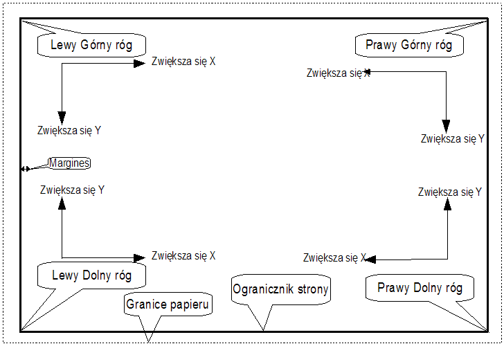
Punkty bazowe i pozycje elementów
Poniewa¿ pozycje s± wzglêdne, to:
- gdy zmienia siê rozmiar strony, pozycja elementu okre¶lona wzglêdem punktu bazowego (jednego z naro¿ników) siê nie zmienia,
- zwykle tabliczki tytu³owe s± wyrównane do prawego dolnego naro¿nika i ten naro¿nik jest dla nich punktem bazowym, zatem wszelkie elementy sk³adowe ramki s± u³o¿one tak samo niezale¿nie od rozmiaru strony.
Dla prostok±tów i segmentów, które posiadaj± dwa punkty zaczepienia, ka¿dy punkt ma swój punkt bazowy.
Rotacja elementów
Elementy których pozycja okre¶lana jest przez jeden punkt (teksty lub wype³nione wielok±ty) mo¿na obracaæ wzglêdem tego punktu:
| Normalnie: Rotacja = 0 | |
 |
Obrócone: Rotacja=20 dla grafiki i 10 stopni dla tekstu. |
Elementy powtarzalne
Elementy sk³adowe ramek mo¿na powtarzaæ. Dziêki temu mo¿liwe jest automatyczne dostosowywanie siê ramek do rozmiaru strony:
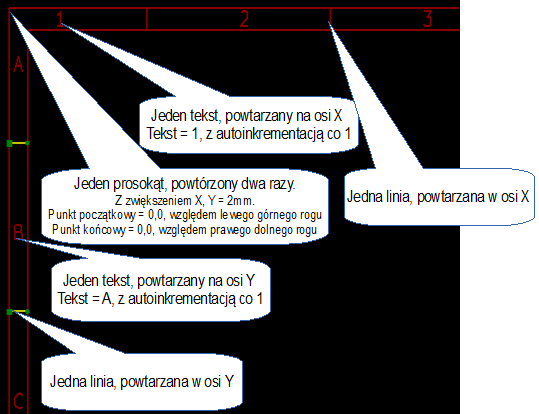
Jest to u¿yteczne do tworzenia siatek oraz ramek podzielonych na pola.
4. Tekst i formatowanie
Teksty proste i symbole formatowania pól
Teksty mog± byæ prostymi ci±gami lub te¿ zawieraæ symbole formatowania pól. Symbole formatowania zostan± zast±pione przez ich warto¶ci pobrane ze zmiennych Eeschema lub Pcbnew. Formatowanie przypomina sk³adniê formatowania funkcji printf() w jêzyku C.
Symbole formatowania sk³adaj± siê ze znaku % po³±czonego z liter± kodow±. Jedynym odstêpstwem jest format %C, który posiada jedn± literê i niezbêdn± mu cyfrê - numer komentarza. Poszczególne symbole formatowania pól oznaczaj±:
%% = zamieniany na znak %
%K = wersja programu Kicad
%Z = nazwa formatu papieru (A4, USLetter ...)
%Y = pole Firma z ustawieñ strony
%D = pole Data z ustawieñ strony
%R = pole Rewizja z ustawieñ strony
%S = numer arkusza
%N = liczba arkuszy
%Cx = pole Komentarz z ustawieñ strony (x=[0..9] okre¶la numer komentarza)
%F = nazwa pliku
%P = nazwa ¶cie¿ki do pliku (nazwa arkusza w przypadku Eeschema)
%T = pole Tytu³ z ustawieñ strony
Przyk³adowo:
"Rozmiar: %Z" zostanie zast±pione przez "Rozmiar A4" je¶li wybranym rozmiarem papieru by³ A4.
| 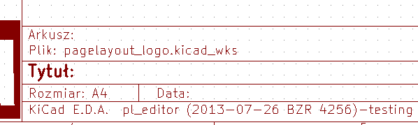 | Tryb u¿ytkownika: Ikona Ramka tytu³owa wy¶wietlana tak jak w Eeschema czy Pcbnew. |
| 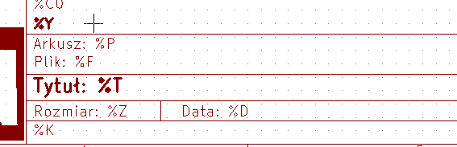 | Tryb z wy¶wietlaniem kodów pól: Ikona |
Teksty z³o¿one z wielu linii
Teksty w uk³adzie strony mog± równie¿ zawieraæ wiele linii. Istniej± dwie mo¿liwo¶ci ich wprowadzania:
- Mo¿na w tek¶cie umie¶ciæ znak przej¶cia do nowej linii zapisany w notacji jêzyka C:
\nczyli znak n poprzedzony znakiem uko¶nika, - Mo¿na w prawym panelu przy zaznaczonym obiekcie tekstowym w jego polu Tekst wprowadziæ tekst z przej¶ciami do nowej linii.
Poni¿ej znajduje siê przyk³ad tekstu sk³adaj±cego siê z wielu linii.
| 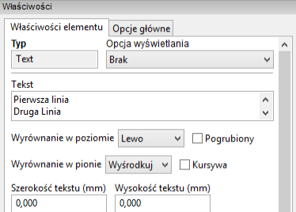 |
Teksty z³o¿one z wielu linii w ustawieniach strony
W ustawieniach strony, pola do wpisywania tekstu nie pozwalaj± na swobodn± edycjê tekstu i prowadzanie kilku linijek tekstu nie jest akceptowane. Jednak¿e stosuj±c metodê z wpisywaniem kodu znaku przej¶cia do nowej linii: \n mo¿na to ograniczenie obej¶æ.
Poni¿ej znajduje siê przyk³ad tekstu w polu Komentarz 2, który zostanie wy¶wietlony w dwóch liniach:
Tak wprowadzony tekst zostanie wy¶wietlony:
Je¶li w tre¶ci tekstu zajdzie potrzeba umieszczenia takiego tekstu, ¿e wystêpuj± w nim po sobie dwa znaki \n, ale nie bêd± one oznacza³y znaku przej¶cia do nowej linii nale¿y zamiast \n wprowadziæ \\n:
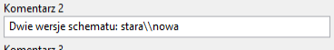
Wtedy taki tekst zostanie wy¶wietlony w jednej linii, a znak przej¶cia do nowej linii nie zostanie b³êdnie zinterpretowany:
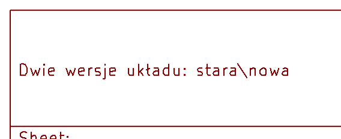
5. Elementy o zmiennej widoczno¶ci i zale¿ne
Elementy widoczne na poszczególnych stronach
U¿ywaj±c Eeschema, pe³ny schemat czêsto nie mie¶ci siê na jednej stronie i jest podzielony hierarchicznie na klika arkuszy. W takim przypadku wszystkie elementy uk³adu strony s± wy¶wietlane na kolejnych arkuszach. Jednak u¿ytkownik mo¿e dodatkowo zdefiniowaæ by pewne elementy ukazywa³y siê tylko na pierwszej stronie lub tylko na kolejnych stronach. W tym celu przewidziano mo¿liwo¶æ wyboru Opcji wy¶wietlania:
Opcja wy¶wietlania:
|
Teksty w ograniczonym polu
Teksty mog± posiadaæ ograniczenia co do zajmowanego miejsca. Dlatego jako jedyne maj± dodatkowe 2 parametry:
- Maksymalna wielko¶æ X,
- Maksymalna wielko¶æ Y,
które bêd± okre¶laæ ramy w jakich mog± siê one zmie¶ciæ.
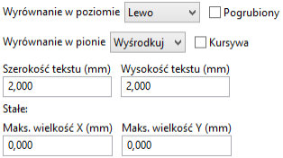
Kiedy opcje te nie bêd± ustawione na zero, wtedy podczas wy¶wietlania tekstu, bie¿±ca wielko¶æ lub szeroko¶æ zostanie automatycznie i dynamicznie ograniczona, tak by ca³y tekst zmie¶ci³ siê w okre¶lonych ramach. Oczywi¶cie je¶li tekst bêdzie mniejszy ni¿ okre¶lone ramy nie bêdzie on skalowany.
|
Tekst bez okre¶lonych ram. Maks wielko¶æ X = 0 Maks wielko¶æ Y = 0 |
|
| Ten sam tekst ale z okre¶lonymi ramami Maks wielko¶æ X = 55 Maks wielko¶æ Y = 0 |
Ograniczenie pola dla tekstu mo¿na te¿ zastosowaæ do tekstów sk³adaj±cych siê z wielu linii:
6. Uruchamianie
Pl_Editor zwykle uruchamiany jest przez Mened¿era projektu KiCad albo poprzez liniê poleceñ. W przypadku linii poleceñ sk³adnia jest standardowa: pl_editor <*.kicad_wks>
7. Obs³uga programu
Ekran g³ówny
Poni¿szy obrazek ukazuje pe³ne okno programu Pl_Editor:
Mo¿na tu wyró¿niæ trzy panele:
- Lewy panel gdzie znajduje siê lista elementów sk³adowych uk³adu strony. Zamiast wybieraæ element za pomoc± myszy, klikaj±c w obszarze roboczym, mo¿na go wybraæ z tej listy. W przypadku elementów niewidocznych mo¿e to byæ jedyny sposób ich wyboru.
- Obszar roboczy, który zajmuje centraln± czê¶æ okna. Tutaj wy¶wietlany jest graficzny podgl±d uk³adu strony.
- Prawy panel gdzie znajduj± siê w³a¶ciwo¶ci danego elementu, które mo¿na dostosowaæ lub zmieniæ.
Menu g³ówne
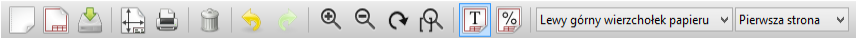
Znaczenie poszczególnych przycisków jest nastêpuj±ce:
| Tworzy nowy uk³ad strony. Obszar roboczy jest wyczyszczony i znajduj± siê na nim tylko granice strony. | |
| Otwiera istniej±cy plik z uk³adem strony. | |
| Zapisuje obecny uk³ad strony. | |
| Otwiera okno ustawieñ rozmiaru strony i pól u¿ytkownika. | |
| Drukuje bie¿±cy uk³ad strony. | |
| Usuwa wybrany element. | |
| Polecenia do cofania i przywracania ostatniej wykonanej operacji. | |
| Polecenia do przystosowywania widoku strony w obszarze roboczym. | |
| Prze³±cza pomiêdzy widokiem trybu u¿ytkownika, gdzie widoczne wy³±cznie pe³ne teksty; a trybem z podgl±dem kodów pól. | |
 |
Wybór naro¿nika bazowego wzglêdem którego bêd± wy¶wietlane wspó³rzêdne na pasku statusu. |
| 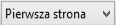 | Wybór widoku strony. Pozwala wybraæ czy uk³ad strony bêdzie widoczny tak jak na pierwszej stronie, czy tak jak na kolejnych stronach. |
Polecenia w oknie edycji
Polecenia wydawane z klawiatury
| F1 | Przybli¿anie widoku |
| F2 | Oddalanie widoki |
| F3 | Od¶wie¿enie widoku |
| F4 | Przesuniêcie kursora na ¶rodek obszaru roboczego razem z przesuniêciem widoku. |
| Home | Dopasowanie powiêkszenia widoku by pe³ny uk³ad strony zmie¶ci³ siê w obszarze roboczym |
| Space Bar | Ustawienie punktu bazowego dla wspó³rzêdnych wzglêdnych wy¶wietlanych na pasku statusu |
| Strza³ka w prawo | Przesuniêcie kursora o jedn± pozycjê siatki w prawo |
| Strza³ka w lewo | Przesuniêcie kursora o jedn± pozycjê siatki w lewo |
| Strza³ka w górê | Przesuniêcie kursora o jedn± pozycjê siatki w górê |
| Strza³ka w dó³ | Przesuniêcie kursora o jedn± pozycjê siatki w dó³ |
Polecenia zwi±zane z mysz±
| Kó³ko myszy | Przybli¿anie lub oddalanie widoku w danym punkcie |
| Ctrl + Kó³ko myszy | Przesuwanie widoku w prawo lub lewo z zachowaniem pozycji kursora |
| Shift + Kó³ko myszy | Przesuwanie widoku w górê lub w dó³ z zachowaniem pozycji kursora |
| Klikniêcie lewym klawiszem myszy | Wybór elementu na ekranie |
| Klikniêcie prawym klawiszem myszy | Otwarcie menu kontekstowego dla elementu, nad którym znajduje siê kursor |
Menu kontekstowe
Menu kontekstowe jest zmienne w zale¿no¶ci od miejsca gdzie aktualnie znajduje siê kursor. Domy¶lnie zawiera podstawowe polecenia. Po wybraniu jednego z elementów dostêpne s± dodatkowe polecenia.
Polecenia podstawowe:
Nie jest mo¿liwe dodanie klasycznej linii ³amanej, gdy¿ wymaga ona zwykle kilku lub kilkunastu punktów, co nie jest obecnie obs³ugiwane. Linie takie w postacie wype³nionych obszarów mo¿na zaimportowaæ z plików tworzonych przez Bitmap2Component. Reszta poleceñ jest to¿sama z innymi znanymi ju¿ poleceniami z innych sk³adników KiCad EDA Suite. |
|
Poniewa¿ zosta³ wybrany jeden z elementów, to oprócz poleceñ podstawowych z domy¶lnego menu kontekstowego pojawi³y siê dwa dodatkowe, zale¿ne od wybranego elementu:
Mog± pojawiæ siê równie¿:
|
Pasek stanu
Pasek stanu jest umiejscowiony na dole okna aplikacji i dostarcza informacji o pozycji kursora - podstawowej i przesuniêcia, rozmiarze strony, jednostkach wymiarów i wybranym punkcie bazowym (naro¿niku).
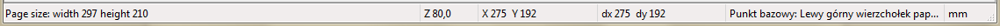
Nale¿y pamiêtaæ, ¿e wspó³rzêdne s± zawsze podawane jako wzglêdne w stosunku do wybranego punktu bazowego.
8. Panele boczne
Panel lewy
Panel lewy pokazuje pe³n± listê elementów sk³adaj±cych siê na uk³ad strony.
Klikniêcie prawym klawiszem na li¶cie wybiera wskazany element i jego w³a¶ciwo¶ci pojawiaj± siê automatycznie w prawym panelu. Dodatkowo klikniêcie prawym klawiszem otworzy skrócone menu kontekstowe. Pozwala ono na proste operacje jak dodanie nowego elementu, czy te¿ jego usuniêcie.
| 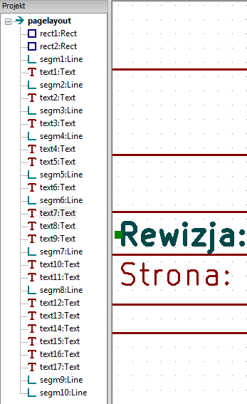 | Drzewo projektu. Wybrany zosta³ element text7 i zosta³ on automatycznie pod¶wietlony w oknie edycji. |
Panel prawy
Wy¶wietla w³a¶ciwo¶ci danego elementu w zale¿no¶ci od jego typu:
| 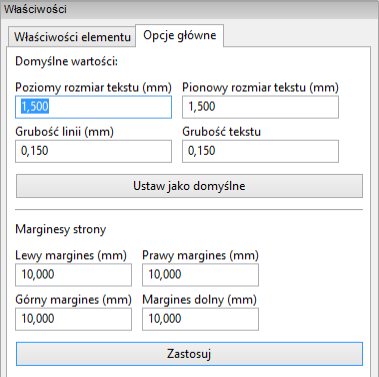 | |
| Zak³adka z w³a¶ciwo¶ciami elementu. Tu jeszcze nie zosta³ on wybrany wiêc pola s± puste. | Opcje domy¶lne i g³ówne ustawienia strony. |
Zak³adka W³a¶ciwo¶ci elementu s³u¿y do zmiany parametrów wybranego elementu i zmienia siê w zale¿no¶ci od jego typu. Zak³adka Opcje g³ówne jest niezmienna i zawiera domy¶lne ustawienia.
Jak ju¿ wspomniano zawarto¶æ zak³adki w³a¶ciwo¶ci zmienia siê. Generalnie mog± wyst±piæ trzy postacie tej zak³adki:
| 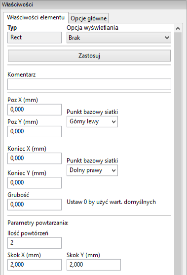 |  |
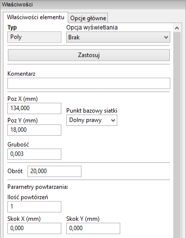 |
| W³a¶ciwo¶ci linii i prostok±tów | W³a¶ciwo¶ci tekstów | W³a¶ciwo¶ci linii ³amanych |
| 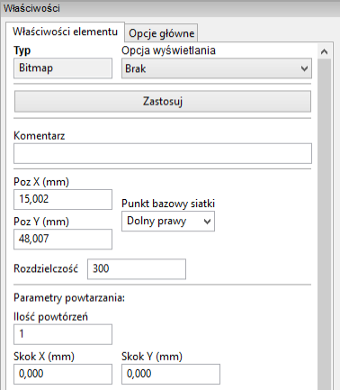 | ||
| W³a¶ciwo¶ci dla map bitowych |
9. Tworzenie i edycja elementów uk³adu strony
Edycja istniej±cych elementów
Edytowany element mo¿e zostaæ wybrany poprzez:
- Drzewo projektu,
- Klikaj±c na niego z wykorzystaniem lewego klawisza myszy w obszarze roboczym,
- Klikaj±c na niego z wykorzystaniem prawego klawisza myszy w obszarze roboczym. Zostanie dodatkowo wy¶wietlone menu kontekstowe.
Gdy element zostanie wybrany, to zmieni siê jego kolor wy¶wietlany w obszarze roboczym. W przypadku czarnego t³a bêdzie on wyró¿niony na ¿ó³to, a w przypadku bia³ego t³a bêdzie wyró¿niony kolorem ciemnob³êkitnym. Dodatkowo w kolorze zielonym zostan± wyró¿nione punkty zaczepienia elementu:
| 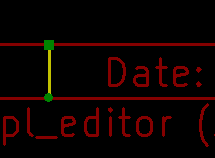 | Punkt pocz±tkowy bêdzie symbolizowa³ kwadrat (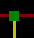) a punkt koñcowy bêdzie symbolizowaæ ko³o (). |
W przypadku elementów powtarzalnych zaznaczane bêd± wszystkie elementy i widoczne bêd± wszystkie punkty pocz±tkowe, i koñcowe. Nie ma znaczenia, który element powtórzony bêdzie poddawany edycji, gdy¿ edycja ta dotyczyæ bêdzie wszystkich elementów jednocze¶nie.
Klikniêcie prawym klawiszem bêdzie wywo³ywaæ odpowiednie menu kontekstowe:
| 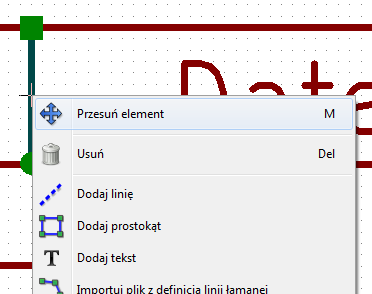 | 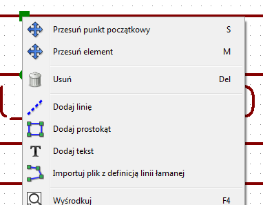 |
| 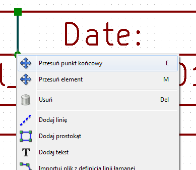 | Trzy postacie menu kontekstowego dla linii. |
Je¶li z miejscu klikniêcia bêdzie wiêcej ni¿ jeden element to Pl_Editor wy¶wietli dodatkowe okno pozwalaj±ce wybraæ w³a¶ciwy element:
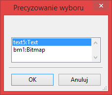
Po wybraniu jednego z punktów zaczepienia mo¿na go normalnie przesuwaæ u¿ywaj±c myszy:
| 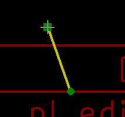 | Wybranie i z³apanie jednego z punktów: pocz±tkowego lub koñcowego pozwoli na jego przesuwanie zgodnie z ruchem kursora myszy. Zatwierdzenie jego docelowej pozycji wykonuje siê poprzez klikniêcie lewym lub prawym klawiszem myszy. |
Tworzenie nowych elementów
Aby dodaæ nowy element nale¿y skorzystaæ z menu kontekstowego. Mo¿na go wywo³aæ zarówno gdy kursor znajduje siê na lewym panelu z drzewem projektu, jak i w obszarze roboczym. Przy czym oba wywo³ania bêd± siê ró¿niæ, ale podstawowe polecenia zwi±zane z tworzeniem nowych elementów zostan± takie same:
| Menu podrêczne wywo³ane na lewym panelu. | Menu podrêczne wywo³ane w obszarze roboczym. |
Linie, prostok±ty czy tekst s± dodawane bezpo¶rednio poprzez wybranie odpowiedniego polecenia z menu kontekstowego. Grafika, np. logotyp nale¿y wcze¶niej przetworzyæ w programie Bitmap2component na postaæ krzywych i wype³nieñ, a dopiero potem mo¿na j± wstawiæ wywo³uj±c polecenie Importuj plik z definicj± linii ³amanej.
Tworzenie linii, prostok±tów i tekstów
Klikniêcie na jedno z poleceñ wstawiania linii, prostok±tów lub tekstów otworzy okno dialogowe z jego opcjami:
| 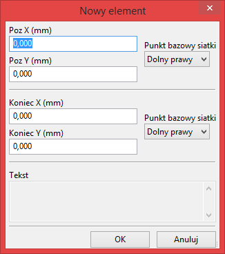 | |
| Postaæ okna przy dodawaniu linii lub prostok±ta | Postaæ okna przy dodawaniu tekstu |
Z pomoc± tych okien mo¿na wstêpnie okre¶liæ pozycjê punktów pocz±tkowych, koñcowych b±d¼ naro¿ników. Jednak¿e mo¿na to zrobiæ pó¼niej korzystaj±c z w³a¶ciwo¶ci obiektów znajduj±cych siê na prawym panelu, albo skorzystaæ z mo¿liwo¶ci ich edycji w polu roboczym.
W wiêkszo¶ci przypadków punkty pocz±tkowe odnosz± siê do tego samego punktu bazowego siatki. Je¶li w danym przypadku tak nie jest, okre¶lenie punktu bazowego lepiej jest wykonaæ ju¿ na etapie tworzenia, poniewa¿ je¶li punkt bazowy zostanie pó¼niej zmieniony, geometria elementu bêdzie nieco dziwna.
Gdy element zostanie ju¿ stworzony, bêdzie go mo¿na dok³adniej przesun±æ w obszarze roboczym by umie¶ciæ go na w³a¶ciwym miejscu (jest to bardzo u¿yteczne w przypadku tekstów oraz ma³ych linii lub prostok±tów).
Tworzenie grafiki (logotypów)
By dodaæ logotyp - liniê ³aman± (czyli wektorow± postaæ logotypu) nale¿y go najpierw stworzyæ u¿ywaj±c Bitmap2component. Program ten tworzy te¿ pliki z definicjami linii ³amanych, które mo¿na do³±czyæ do bie¿±cego projektu wywo³uj±c polecenie Importuj plik z definicj± linii ³amanej.
Plik utworzony przez Bitmap2component to zwyk³y plik uk³adu strony, ale zawieraj±cy wy³±cznie jeden element: wype³niona, zamkniêta linia ³amana.
Nale¿y zauwa¿yæ, ¿e polecenie to mo¿e zostaæ u¿yte równie¿ w celu do³±czenia innego pliku definicji uk³adu strony do bie¿±cego projektu.
Po wstawieniu grafiki, mo¿na j± przesun±æ w docelowe miejsce i zmieniæ jej parametry, np. obróciæ czy powieliæ tak jak inne elementy uk³adu strony.
Dodawanie obrazów z map bitowych
Gdyby jednak istnia³a potrzeba dodania obrazów, których przekszta³cenie w monochromatyczne linie ³amane nie mo¿e zostaæ przeprowadzone, mo¿na je dodaæ korzystaj±c z opcji Dodaj bitmapê.
Obs³ugiwana jest szeroka gama formatów graficznych (PNG, JPEG, BMP .). Nale¿y jednak pamiêtaæ o pewnych ograniczeniach i zaleceniach:
- Podczas importowania bitmapy jej PPI (pixel per inch) jest ustawiana na 300PPI. Warto¶æ t± mo¿na zmieniæ na prawym panelu w opcji Rozdzielczo¶æ.
- Rozmiar bitmapy na rysunku jest zale¿ny od tego parametru.
Nale¿y byæ ostro¿nym przy umieszczaniu map bitowych o du¿ej rozdzielczo¶ci, poniewa¿ zwiêkszaj± one znacznie rozmiar pliku. Ponadto zwiêkszaj± one czas potrzebny na przerysowanie ramki.
Bitmapy mog± byæ powtarzane, lecz nie mo¿na ich obracaæ.